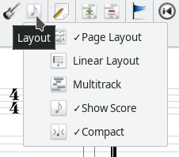

With the View pulldown menu and the related toolbar icons you can customize the appearance of TuxGuitar's main window and open different dialogs.
You can change the current view also during playback.
Show or hide toolbars, track table and fretboard
The first five entries in the View menu let you show and hide the main elements of the TuxGuitar window:
- View → Show Main Toolbar: Toggles the Main Toolbar just below the pulldown menu.
- View → Customize Main Toolbar: Allows you to add or remove buttons from the Main Toolbar.
- View → Show Edit Toolbar: Enables and disables the Edit Toolbar on the left side of the main window.
- View → Show Track Table: Shows the track table on the bottom.
- View → Show Fretboard: The Fretboard on the bottom of the main window is useful to view the exact spots where you should put your fingers in each moment. You can even click on the fretboard to edit your tab. Fretboard view is available for both right- and left-handed guitars.
Open and close more dialogs
Other external dialogs are:
- View → Show Instruments: In the instruments settings you can change the volume and some effects of the instruments in your tab, change panning and assign MIDI channel.
- View → Show Player: Here you can show the Player control window, where you can control the song playback.
- View → Show Piano: Opens a separate window with a piano keyboard. Now you can enter the notes by clicking on the piano keys.
- View → Show Matrix: Opens the Matrix Editor for percussion tracks.

Layout
There are several layout types in TuxGuitar. You can switch between them in the View pulldown menu or with the Layout icons on the Main Toolbar. They all change the view of tablature and scores in the main editor window.
The first menu item is Page Layout. Its alternative is the second item: Linear Layout. Page Layout displays the tablature and scores like on the paper sheets, with line breaks. On the other side, Linear Layout shows the instrument in a single line, expanding to the right.
The third menu item enables Multitrack view. When enabled, all the tracks will be displayed in the main window. When Multitrack is turned off, only the track selected in the track table is shown.

In my personal experience, good combinations are Linear+Multitrack, and Page Layout without Multitrack (for viewing a single instrument). By turning Multitrack on and off, you can easily switch between these two combinations: When you activate Multitrack, the layout automatically changes to Linear; when turning Multitrack off, the layout switches to Page Layout. You can still get other combinations by explicitly selecting Page Layout or Linear Layout after toggeling Multitrack.
The fourth item is Show Scores. It simply views the scores (notation) above your tab line.
Show Tablature enables or disables the tablature line in the main view.
The last entry enables the Compact view. You would like to enable it when you consider your view too wide. Note that in this mode some details may be hidden (e.g. Bend effect details).
In the submenu View → Chord Style you can choose how chords are displayed in the main tab view.
Zoom
The last section in the View pulldown menu controls how big or small the scores and tablatures are shown: Zoom in to enlarge, Zoom out to shrink or Reset the zoom to turn back to the default size.
As in many other programs, you can also zoom in and out by using the mouse wheel and pressing the Ctrl key at the same time.